Svello Multi-Platform PropTech Ecosystem
Svello (Swap Space) is an enterprise property technology platform consisting of four tightly synchronized software systems: a Buyer Mobile App, an Agent Mobile App, an Agent Web CRM, and a Platform Admin & Analytics Console. Here is how I coordinated its end-to-end delivery.
Bridging 4 Platforms, 6 Squads, and 1 Unified Vision
The primary challenge was managing interconnected platforms while requirements and designs evolved simultaneously. The Buyer App needed real-time matching with properties created in the Agent Web Platform, while the Master Admin console required live operational analytics and GDPR compliance across Saudi Arabian and international markets.
Core TPM Deliverables
- Comprehensive Work Breakdown Structure (WBS)
- Figma-to-Dev Story Specs with Gherkin Criteria
- Cross-Platform State Machine (Connected → Check-off → Closed)
- App Store & Play Store Launch Readiness
- GDPR User Privacy & Data Deletion Compliance
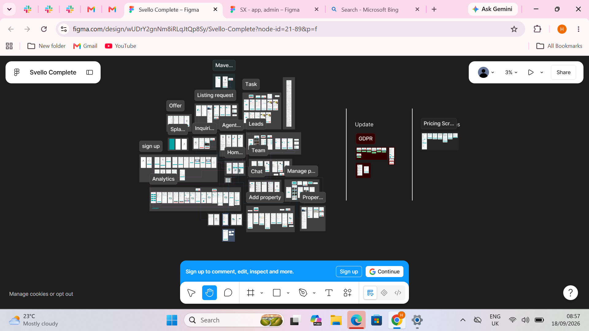
Full Platform System Architecture Board
The master design system and cross-platform information architecture. Tracing user flows from visitor signup, agent CRM dashboard, property listings, GDPR workflows, to monetization tiers.
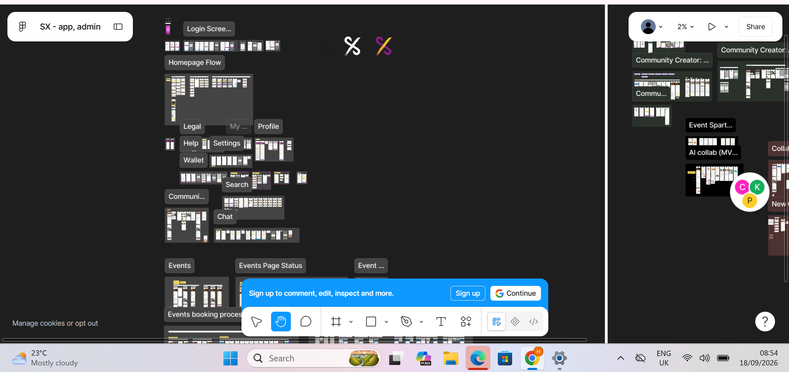
App & Admin Flow Decomposition
Early wireframe and interaction flow breakdown prior to engineering handoff.
Onboarding & Identity Verification
Streamlined onboarding supporting Apple Sign-In, Google OAuth, and secure email authentication.
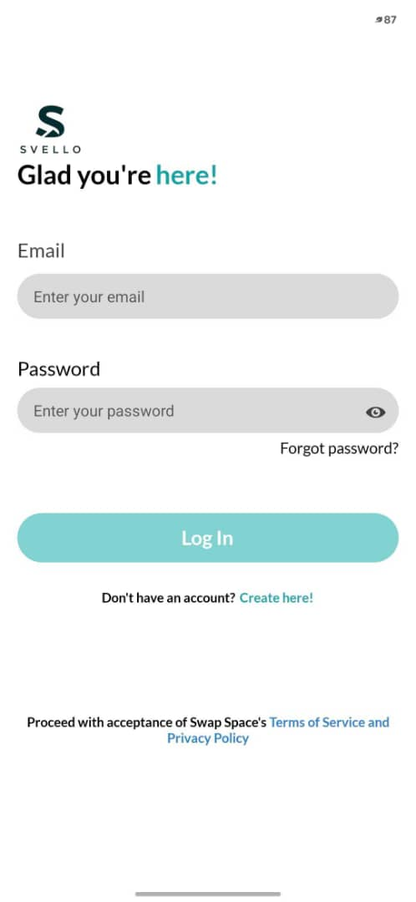
Buyer Secure Sign-In Path
Fast returning user pathway with biometric auth fallback and password reset logic.
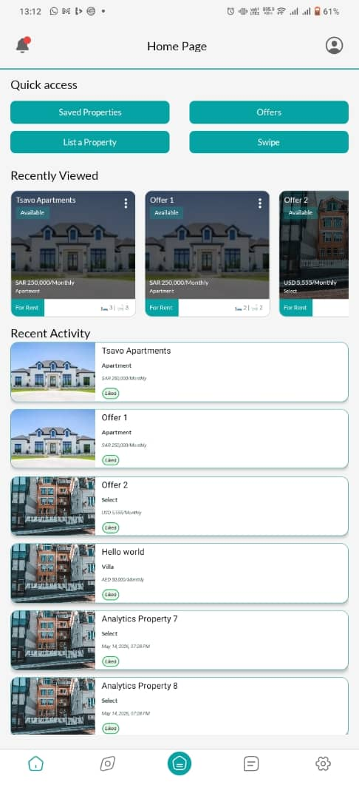
Property Feed & Quick Access
Central hub for buyers: recently viewed properties, active offers, listing shortcuts, and status tags.
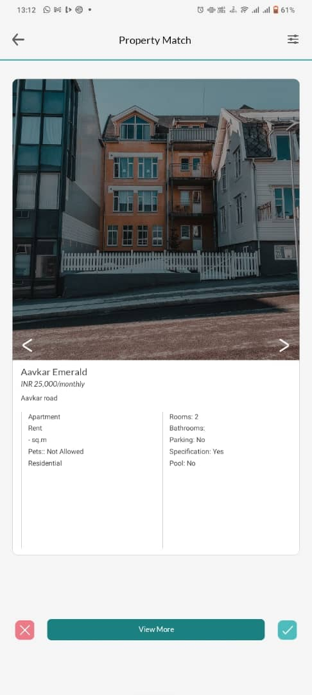
Interactive Property Match & Swipe
High-engagement discovery UI allowing buyers to swipe or click to match, reject, or inspect listings.
.jpg)
Saved Properties & Custom Wishlists
Organized property collections allowing buyers to group, track price changes, and share portfolios.
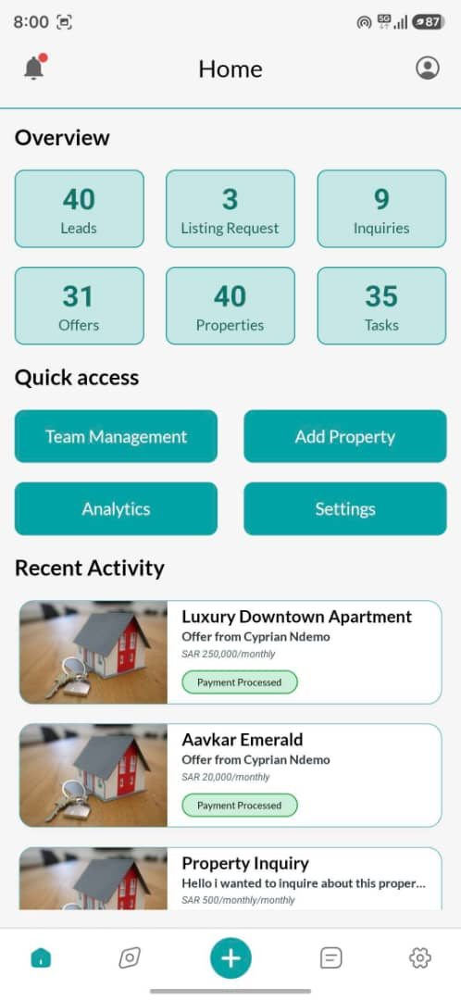
Agent Mobile Operations Dashboard
Command center for property brokers: real-time counters for Leads (40), Listing Requests (3), Offers (31), and Inquiries (9).
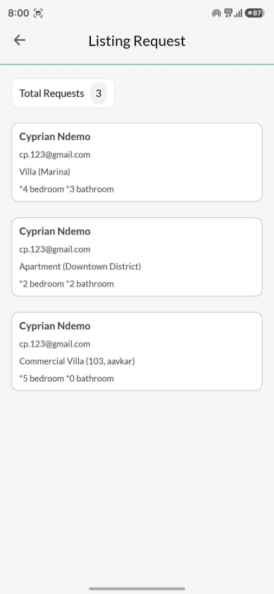
Buyer Listing Requests Queue
Direct pipeline connecting buyer requests (Villa, Apartments, Commercial) directly to agent assignment queues.
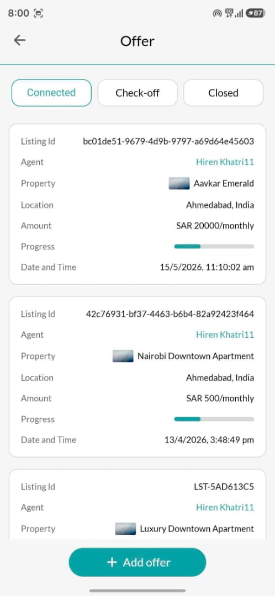
Multi-Status Offer Lifecycle
Tracking real estate transactions from Connected → Check-off → Closed with monetary amounts in SAR.
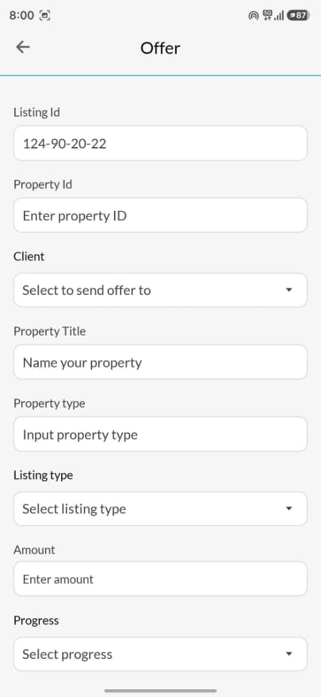
Offer Creation & Binding Workflow
Rapid transaction creation form linking listing ID, client selection, property title, and payment progress.
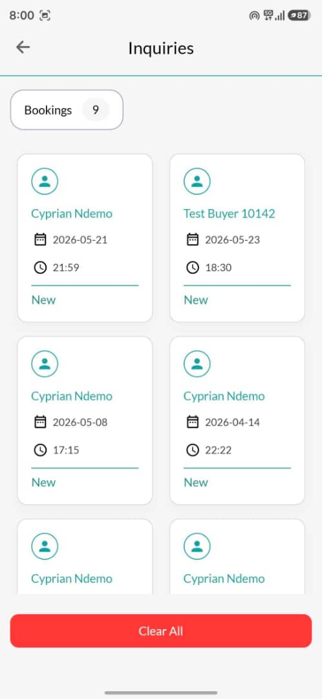
Viewing Bookings & Inquiries
Scheduled viewing appointments with timestamps, buyer verification status, and quick resolution paths.
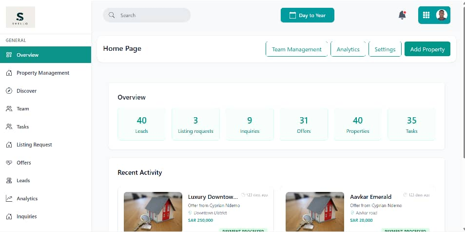
Admin Web Operations Console
Comprehensive desktop web portal for platform superadmins: property approvals, team permissions, and reports.
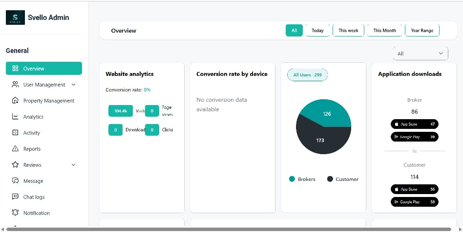
Platform Telemetry & Conversion Analytics
Unified analytics tracking website visits (104.4K+), device conversion, and store downloads (App Store vs Google Play).